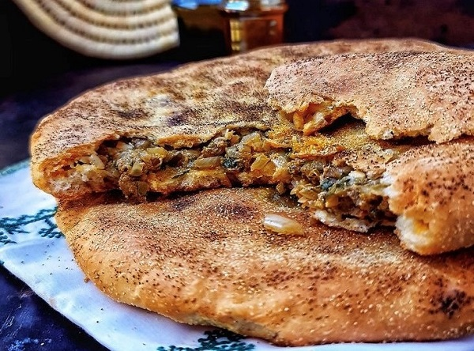
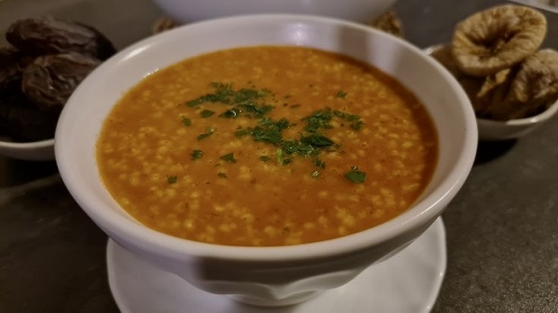
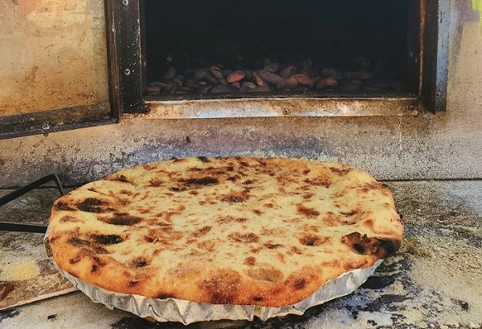

Découvrire les plats Emblématique du Sud du Maroc
Ouarzazate : La porte du désert
Medfouna
La medfouna, souvent appelée "pizza berbère", est un mets traditionnel de la région désertique de Ouarzazate et des vallées alentour. Ce plat consiste en une pâte simple à base de farine, d’eau, de sel et parfois d’un peu d’huile, qui est étalée en un disque fin. La garniture est composée de viande (souvent d’agneau ou de chameau), d’oignons hachés, d’ail, de coriandre et de persil, ainsi que d’un mélange d’épices locales comme le cumin, le paprika et le ras-el-hanout.
La pâte est refermée en enveloppe autour de la garniture, puis cuite dans un four traditionnel en argile ou enfouie dans des braises chaudes. Ce mode de cuisson donne à la medfouna une saveur légèrement fumée. Elle était historiquement consommée par les caravaniers voyageant à travers le désert, car elle est facile à transporter et reste savoureuse plusieurs jours.
La Tchicha Berbère
La Tchicha Berbère, originaire des montagnes du Haut Atlas et de la région de Ouarzazate, est une soupe traditionnelle à base de semoule d’orge. Préparée avec des tomates, des oignons, de l’huile d’olive et de la menthe sauvage, elle est particulièrement consommée en hiver pour ses qualités nutritives et réchauffantes.
Ce plat, simple mais riche en saveurs, est également donné aux femmes nouvellement accouchées pour ses bienfaits énergétiques. Symbole de la cuisine berbère, la Tchicha illustre l’art d’utiliser des ingrédients locaux pour créer un mets à la fois réconfortant et ancré dans la tradition.
Pain Tafrnaout
Le khobz tafrnaout, ou "pain de Tafernout", est un pain traditionnel cuit dans des fours en argile appelés "tafernouts", typiques des régions berbères. La pâte, préparée avec de la farine d’orge ou de blé, est mélangée à de l’eau, de la levure, et une pincée de sel avant d’être laissée à lever. Elle est ensuite mise dans le four chauffé au bois ou dans les braises.
Le pain acquiert une croûte légèrement fumée et une mie moelleuse, grâce au processus de cuisson particulier. Chaque village possède souvent un four collectif, où les habitants déposent leurs pâtons à cuire. Ce pain accompagne parfaitement les tajines, les soupes, ou simplement un bol de thé à la menthe.
Explorez la diversité des saveurs dans autres villes du Maroc
Tanger, Fez, Marrakech, Oujda et Laayoune
Bon voyage à travers les saveurs du Maroc !